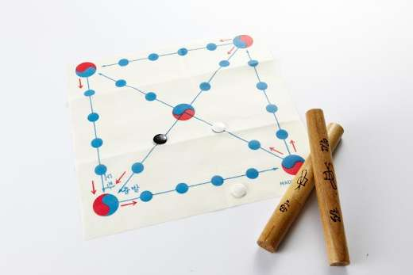
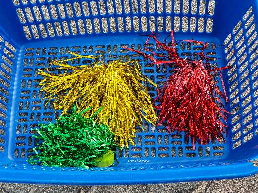
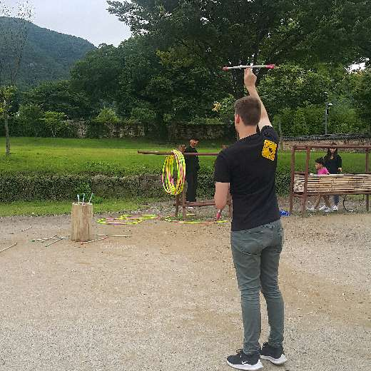

Musée National du Hangeul
C'est par un jour de pluie que nous nous aventurons au Musée National du Hangeul
Je ne me souviens pas avoir visité ce lieu. Son ouverture date du 9 octobre 2014, date à laquelle on célèbre le jour du Hangeul, l'alphabet coréen.
Mais je connais bien les environs car le Musée National de Corée se trouve à quelques centaines de mètres, à proximité du Yongsan Family Park.
Le Hangeul
Photos : Yut-Nori et Jegichagi
Photos by ©jeanne


Photos by ©jeanne
Le coréen appartiendrait à la famille des langues altaïques. A l'origine, les Coréens utilisaient plusieurs formes d'écriture : l'écriture Idu, un système d'écriture caractérisé par l'usage des caractères chinois pour la transcription écrite du coréen, le "Hyangchal", un sous-groupe de l'écriture Idu, le Gugyeol, utilisé pour la lecture des textes en chinois classique.
Au XVème siècle, lorsque le Roi Sejong arrive au trône, seules les élites ont accès à l'éducation et une importante partie de la population coréenne est fortement touchée par l'illettrisme, de par la complexité et les nombreux caractères de la langue chinoise.
Savant reconnu, fervent adepte des principes confucéens, fin stratège militaire et grand humaniste, le Roi Sejong Le Grand publie le Hangul en 1446 avec un ouvrage de 33 pages appelé "Hunmin Jeong-eum", dans lequel il explique l'alphabet, son utilisation et ses origines philosophiques. A cette date, le Hangul comprend 28 caractères de base. Grâce au Roi Sejong, la majorité du peuple coréen peut désormais se plonger dans l'univers du savoir, de la lecture et de l'écriture.
De nos jours, le Hangul de base comprend 14 consonnes et 10 voyelles qu'on organise en blocs syllabiques. Chaque bloc se compose de caract√®res alphab√©tiques pour former des syllabes. Le Hangul est un alphabet remarquable de simplicit√© et n'importe qui peut commencer √† lire le cor√©en en quelques heures. Alors, qu'attendez-vous ? A vous de jouer ‚úçüèΩü§£ !
L'architecture du musée
Photos by ©coreevoyage
Le musée a été construit en se basant sur les 3 premières voyelles de l'ancien alphabet coréen.
Selon un principe issu de la philosophie orientale, Cheonji-in (천지인) ou Samjae (삼재), ces 3 lettres représentent le ciel, la terre et les Hommes.
Info pratique
On retrouve ce système d'écriture sur les claviers numériques des téléphones portables. Avec un peu d'entrainement, ecrire le coreen est bien plus rapide en utilisant cette technique de composition des mots.

Philosophie et système
- 1ère lettre : le "i" ("ㅣ" en coréen) représente le ciel : 하늘의 높으니
- 2ème lettre : le "eu" ("ㅡ" en coréen) représente la terre : 땅은 낮고
- 3ème lettre : le "point" ("." en coréen) représente l'Homme : 하늘과 땅의 가운데 있는 사람은
A partir de ces 3 voyelles, on peut alors former les voyelles suivantes :
- L'élément humain "." (le point) se trouve à la DROITE du ciel "ㅣ" (le trait vertical), représentant le lever du soleil, l'est. Le son "a" ("ㅏ" en coréen) est associé à un son clair.
- L'élément humain "." (le point) se trouve à la GAUCHE du ciel "ㅣ" (le trait vertical), représentant le coucher du soleil, l'ouest. Le son "eo" ("ㅓ" en coréen) est associé à un sonorité sombre.
- L'élément humain "." (le point) se trouve au DESSUS de la terre "ㅡ" (le trait horizontal), et forme la voyelle "o" ("ㅗ" en coréen).
- L'élément humain "." (le point) se trouve SOUS la terre "ㅡ" (le trait horizontal), et forme la voyelle "ou" ("ㅜ" en coréen).
Réouverture du musée
La réouverture du Musée National du Hangeul est prévue pour le mois de novembre 2021.
Il nous tarde la fin des travaux !
Photo by ©jeanne

Ou tout simplement le cerf-volant. Après avoir joué, on écrit le mot 送厄迎福 (송액영복 / « Envoyer la malchance et accueillir la chance ») sur le cerf-volant et on coupe la ficelle pour le laisser s’envoler au coucher du soleil. Cette pratique remonterait au royaume de Silla. Une étoile serait tombée du ciel et aurait effrayé la reine Jindeok. Le général Kim Yushin eu l'idée de fabriquer une sorte d’épouvantail accroché à une ficelle et de le faire voler pour donner l’illusion que l'étoile repartait dans le ciel.
Neolttwigi (널뛰기)
Photos by wikimedia

Le Neolttwigi est un jeu similaire à la balançoire mais pour deux personnes. On se tient debout, de part et d’autre d’une planche à bascule et on saute chacun son tour. On dit que ce jeu était pratiqué par les jeunes femmes de la haute classe de la dynastie Joseon (Yangban / 양반). Puisqu’elle ne pouvaient pas sortir de chez elles, sauter sur cette planche leur permettait de voir par dessus le mur !
Autres jeux traditionnels
Il existe encore bien d’autres jeux tels que le Paeingichigi (파엔기치기) une petite toupie, le #Gonggi (공기놀이) très similaire à nos osselets, le #Tuho (투호놀이) qui consiste à lancer des flèches dans un vase ou le célèbre #Go Stop (고스톱) jeu de cartes qui date du 19ème siècle.
Photos : le Paeingichigi et le Tuho
Photos by ©jeanne


Photos by ©jeanne


Photo : le Go Stop
Photo by ©jeanne

Organisez votre semaine ⬇️
Planner Semainier Spécial Seollal (Code PROMO : COVOYAGE)
Photos by ©jeanne
Photos by ©jeanne
Photo by ©jeanne